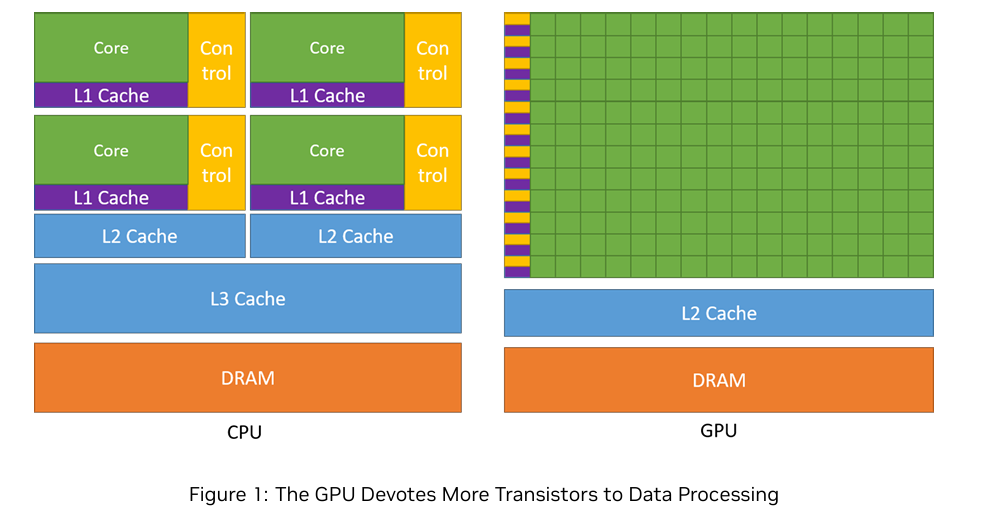
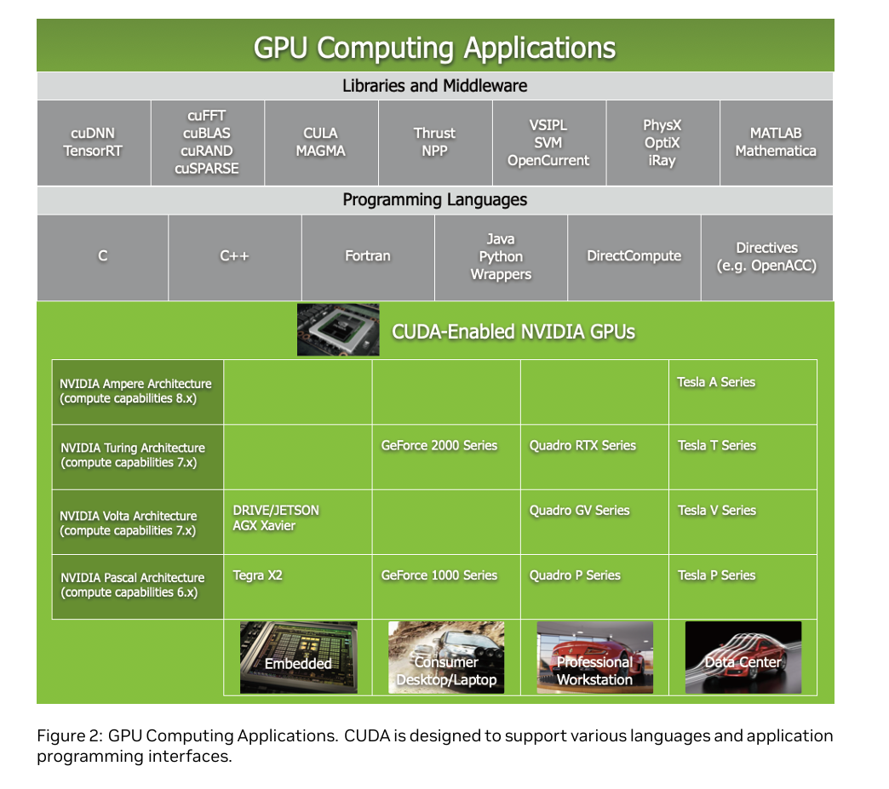
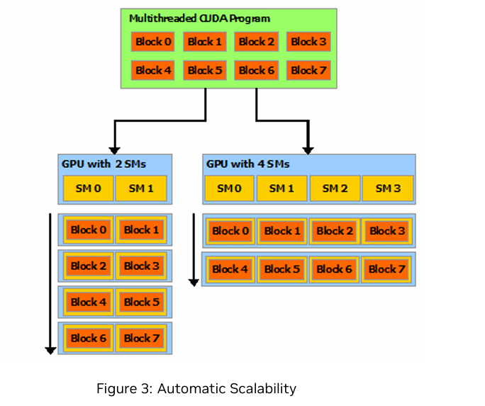

CUDA 00: Introduction
（所有内容均基于NVIDIA官方CUDA Document。本次内容包含原文档Chapter1-4）
I.Overview
CUDA 是由 NVIDIA 开发的一款并行计算平台和编程模型，通过利用 GPU 的强大计算能力，能够实现计算性能的显著提升。它允许开发者使用 C、C++ 和 Fortran 等编程语言加速计算密集型应用程序，并在深度学习、科学计算和高性能计算（HPC）等领域得到了广泛应用。
《CUDA C 编程指南》是官方的全面资源，详细解释了如何使用 CUDA 平台编写程序。它提供了 CUDA 架构、编程模型、语言扩展以及性能指南的详细文档。无论您是刚开始学习还是正在优化复杂的 GPU 内核，这本指南都是有效利用 CUDA 全部功能的必备参考资料。
II.Introduction
2.1.使用GPU的优势
图形处理器的名称源于其最初设计理念：二十年前，图形处理器（GPU）作为专门用于加速图形渲染的专用处理器而诞生。随着市场对实时、高清、3D图形处理需求的持续增长，图形处理器已演变为一款通用处理器，其应用范围远不止于图形渲染，如今可处理包括计算、机器学习、人工智能、数据分析、科学计算、游戏开发等在内的多种工作负载。
图形处理单元（GPU）在类似的价格和功耗范围内，提供了比中央处理单元（CPU）高得多的指令吞吐量和内存带宽。许多应用程序利用这些更高的性能，在GPU上运行得比在CPU上更快（参见GPU应用程序）。其他计算设备，如现场可编程门阵列（FPGA），也非常节能，但与GPU相比，它们提供的编程灵活性要少得多。
GPU 和 CPU 之间存在性能差异，是因为它们的设计目标不同。CPU 设计用于以最快速度执行一系列操作（称为线程），并能同时执行数十个此类线程，而 GPU 设计用于同时执行数千个线程（通过摊销较慢的单线程性能来实现更高的吞吐量）。
GPU专为高度并行计算而设计，因此其架构中更多转发器被用于数据处理而非数据缓存和流量控制。示意图图1展示了CPU与GPU在芯片资源分配上的一个示例。

将更多晶体管用于数据处理，例如浮点运算，对高度并行计算有利；GPU可以通过计算来隐藏内存访问延迟，而不是依赖于大型数据缓存和复杂的流程控制来避免较长的内存访问延迟，这两者在晶体管数量上都较为昂贵。
一般来说，一个应用程序包含并行部分和顺序部分的混合，因此系统设计时会结合使用GPU和CPU以最大化整体性能。具有高度并行性的应用程序可以利用GPU的高度并行特性，实现比在CPU上更高的性能。
2.2.CUDA:通用并行计算平台及编程模型
2006年11月，NVIDIA推出了CUDA，这是一个通用并行计算平台和程序设计模型，利用NVIDIA GPU中的并行计算引擎，以比CPU更高效的方式解决许多复杂的计算问题。
CUDA附带一个软件环境，允许开发人员使用C++作为高级编程语言。
如图2所示，其他语言、应用程序编程接口或基于指令的方法也得到支持，例如FORTRAN、DirectCompute、OpenACC。

2.3.可扩展的编程模型
多核CPU和多核GPU的出现意味着主流处理器芯片现在已成为并行系统。挑战在于开发能够透明地扩展其并行性以利用日益增加的处理器核心数量的应用软件，就像3D图形应用程序透明地扩展其并行性以适应核心数量差异巨大的多核GPU一样。
CUDA并行编程模型旨在克服这一挑战，同时保持对熟悉C等标准编程语言的程序员而言较低的学习曲线。
其核心包含三个关键抽象概念——线程组层次结构、共享内存和屏障同步——这些抽象概念以最小的语言扩展形式直接暴露给程序员。
这些抽象提供了细粒度的数据并行性和线程并行性，嵌套在粗粒度的数据并行性和任务并行性中。它们引导程序员将问题划分为粗粒度的子问题，这些子问题可以由线程块独立并行解决，而每个子问题又可以进一步划分为更细粒度的部分，这些部分可以由块内的所有线程协同并行解决。
这种分解通过允许线程在解决每个子问题时进行协作，从而保留了语言的表达能力，同时实现了自动可扩展性。事实上，每个线程块可以调度到GPU内任何可用多处理器上，以任意顺序，并行或串行执行，因此编译后的CUDA程序可以在任意数量的多处理器上执行，如图3所示，而运行时系统只需知道物理多处理器的数量。

GPU 围绕流式多处理器（SM）阵列构建（参见硬件实现部分以获取更多详细信息）。多线程程序被划分为独立执行的线程块，因此拥有更多多处理器的 GPU 将自动在较短时间内完成程序执行，而拥有较少多处理器的 GPU 则需要更长时间。
III.Chanelog
| Version | Changes |
|---|---|
| 13.0 | Moved the instruction throughput table from the Performance Guidelines section of the CUDA C++ Programming Guide to the instruction-optimization section of the CUDA C++ Best Practices Guide. Removed unsupported architectures and corrected entries for integer arithmetic and type conversion. |
| 12.9 | Added section Error Log Management and CUDA_LOG_FILE to CUDA Environment Variables |
| 12.8 | Added section TMA Swizzle |